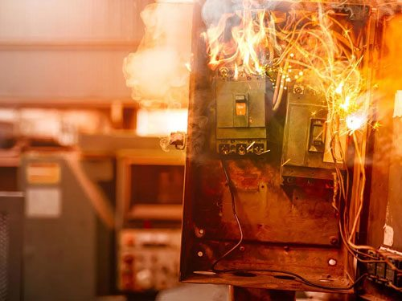
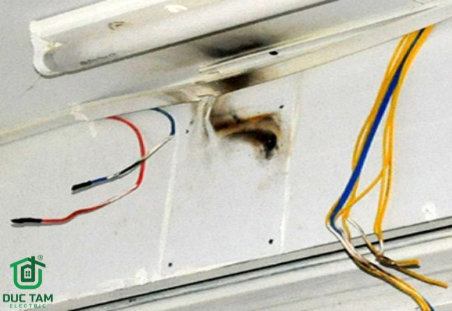

Chập điện là một trong những sự cố có nguy cơ gây cháy nổ, hư hỏng thiết bị và đe dọa trực tiếp đến an toàn của người lao động. Trong môi trường nhà máy, nơi có nhiều máy móc và hệ thống điện hoạt động liên tục, việc nhận biết dấu hiệu bất thường và xử lý đúng cách đóng vai trò quan trọng trong việc hạn chế thiệt hại.

1. Nhận biết những dấu hiệu khi xảy ra chập điện
Chập điện thường xảy ra khi các dây dẫn có điện tiếp xúc trực tiếp với nhau hoặc với những bộ phận dẫn điện không phù hợp, gây dòng điện tăng đột ngột. Sự cố có thể xuất phát từ dây dẫn bị hở, lớp cách điện xuống cấp, thiết bị quá tải hoặc hệ thống điện lắp đặt không đúng kỹ thuật.
Một số dấu hiệu thường gặp gồm:
- Cầu dao, aptomat tự động ngắt liên tục.
- Xuất hiện tia lửa điện tại ổ cắm, dây dẫn hoặc bảng điện.
- Có mùi khét, khói hoặc dấu hiệu nóng bất thường ở thiết bị.
- Máy móc đột ngột ngừng hoạt động, nguồn điện chập chờn.
Khi phát hiện những dấu hiệu trên, cần xem đây là tình huống nguy hiểm và nhanh chóng cảnh báo những người xung quanh.
2. Các bước xử lý an toàn khi xảy ra chập điện
Khi phát hiện sự cố, người lao động cần bình tĩnh và thực hiện các nguyên tắc an toàn sau:
Thứ nhất, giữ khoảng cách với khu vực xảy ra sự cố. Không chạm tay vào dây điện, ổ cắm, máy móc hoặc các vật thể có khả năng đang mang điện. Cảnh báo và hướng dẫn mọi người tránh xa khu vực nguy hiểm.
Thứ hai, ngắt nguồn điện khi có thể thực hiện an toàn. Nếu vị trí cầu dao hoặc aptomat nằm ngoài vùng nguy hiểm và người thao tác không phải tiếp xúc với bộ phận đang mang điện, có thể ngắt nguồn điện. Không cố tiếp cận tủ điện đang phát tia lửa, bốc khói hoặc có nguy cơ phóng điện.
Thứ ba, không sử dụng nước để dập cháy điện. Nếu xảy ra cháy, cần sử dụng bình chữa cháy phù hợp với đám cháy điện như bình CO₂ hoặc bình bột khô, nhưng chỉ khi đã được huấn luyện, có lối thoát an toàn và điều kiện cho phép. Nếu đám cháy phát triển, cần sơ tán và gọi lực lượng cứu hỏa theo số 114.
Thứ tư, liên hệ người có chuyên môn kiểm tra. Không tự ý tháo lắp, sửa chữa dây dẫn hoặc thiết bị điện khi chưa xác định chắc chắn nguồn điện đã được cô lập an toàn.
3. Chủ động phòng ngừa sự cố chập điện trong nhà máy

Phòng ngừa luôn là giải pháp quan trọng để giảm thiểu nguy cơ tai nạn điện. Doanh nghiệp cần kiểm tra định kỳ hệ thống dây dẫn, ổ cắm, tủ điện, aptomat và các thiết bị bảo vệ. Những bộ phận có dấu hiệu nứt vỡ, nóng bất thường hoặc hư hỏng lớp cách điện cần được xử lý kịp thời.
Bên cạnh đó, cần sử dụng thiết bị điện đúng công suất, tránh đấu nối tùy tiện và không để hệ thống hoạt động quá tải. Việc trang bị thiết bị đóng cắt, bảo vệ quá dòng, chống rò điện phù hợp cũng góp phần nâng cao mức độ an toàn cho hệ thống.
Chập điện có thể xảy ra bất ngờ nhưng hậu quả hoàn toàn có thể được hạn chế nếu mỗi người lao động có kiến thức nhận biết và xử lý đúng cách. An toàn điện không chỉ là trách nhiệm của bộ phận kỹ thuật mà còn cần sự chủ động của tất cả những người làm việc trong môi trường sản xuất.